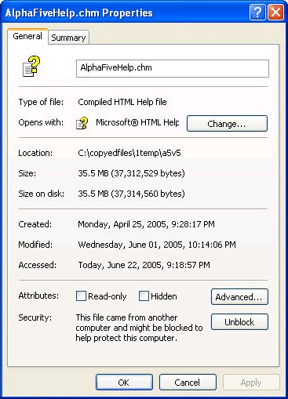

Frequently Asked Questions
This page lists some of the frequently asked questions on the Alpha Five message boards.
When are Administrator rights required for Alpha Five applications?
Bug Reports, Error Messages, Program Termination, Unhandled Exceptions
Alpha Five or Application Server Activation Problems
If you need to contact Alpha Software regarding activation, please supply as much information as possible.
You will want to include your Alpha Five license number(s) and the affected "Machine Name(s)". You can simply send us an email ( ) with the following information.
Your license number(s).
The affected "Machine Name" that you wish to be removed.
If need be, the "Machine Name" of the new computer.
We will then process the necessary requests for you and email back the new activation keys.
Remember in an emergency, you can always rename your computer to what it was before, and you will not need to re-activate the software, and that is why it is important to make a note of your current license numbers and "Machine Names".
The easiest way to get your "Machine Name" is to select Help > About Alpha Five.... The resulting dialog box contains your license number and "Machine Name".
I have just tried to open the web application server and got the message that "Port 80 is already in use". What am I doing wrong?
Port 80 is used by many different applications. Internet Information Services (IIS), Small Business Server and Microsoft Exchange use require port 80, as well as personal web servers.
For detailed assitance to determine what other software on your computer may be using port 80, please see Understanding Port-in-Use Problems.
It is easy to switch to port 81 (for example) in the Application Server configuration. Then your URL needs to have a ":81" at the end of what would be your normal URL to the Alpha server.
Problems Opening CHM Help Files Located on Other Computers
If you have had problems opening CHM help files on other computers, it may have been caused by recent Microsoft security fixes. One symptom is a message beginning "Action Cancelled...".
Apparently, opening a remotely located help file can expose your system to attack. The following registry can solve the problem, by allowing you to open CHM files on your intranet. There is more information at http://www.grainge.org/index.htm#authoring/ms05-026/ms05-026_update.htm.
Backup your registry first!
Create a key named: HKEY_LOCAL_MACHINE\SOFTWARE\Microsoft\HTMLHelp\1.x\ItssRestrictions
Give it a new DWORD value named MaxAllowedZone
Set the DWORD value to 3.
.CHM Help Files Do Not Work Properly
Recently, a new Microsoft feature has caused some downloaded help files to display an "Action Cancelled" message when you attempt to view a topic. The solution to this problem is to open Windows Explorer, right click on the help file, and select Properties, then click Unblock.

When are Administrator rights required for Alpha Five applications?
Administrator rights are required at installation time and first startup.
What Windows operating systems support Alpha Five?
Alpha Five and the Application Server will run on Windows 2000, XP (Home or Professional), 2003, Vista, 2008, and 7. Each user must have registry-writing privileges. Under Windows XP this means the user must be an administrator or power user. Alpha Five runs as a 32 bit application under 64 bit versions of Windows.
Why do I get repeating field values in One-to-Many reports?
This is typically caused by placing fields from both parent and child tables in the same details band in your report layout. For more information see Designing Reports for Sets with One-to-Many Links.
How many licenses are required for the Application Server?
The Application Server licenses are sold and installed per-server. We don't limit how may sites or applications you can host on a single server with a single license. It is quite possible to host multiple sites on a single server.
If you use one server to host multiple web sites, you only need one license.
If you use one server per web site, such as each store having the server installed locally, you would need one server license for each site.
Why do small rectangles appear where data should be?
The small rectangles indicate that the field is not wide enough to print the data. To display the data properly:
Highlight the field, right click and select Properties... .
Display the Format tab.
Adjust the values in the Width and Decimal places fields.
How to place a date on a formthe user cannot change
Display the Table/Sets tab of the Control Panel.
Select the table that contains the date field and click Design > Field Rules.
Select the date field from the drop down list at top.
On the Data Entry tab set the Default Mode value to "Simple Default Expression".
Set the Default Value field expression to DATE().
Scroll down and set the Skip expression to .T. .
Click Save and exit from Field Rules.
Alpha Five will place the current system date into this field when it is created. Afterwards, the current user will not be able to change it because the field will not accept focus.
Could not open or create Multi-user information file
.MUF files are temporary files that Alpha Five creates to control the number of people who can concurrently open a database. This error occurs when (1) the .MUF file is marked read-only, (2) it is located in a directory that is inaccessible to the user, or (3) there are too many users trying to access Alpha Five. Resolve issue (1) by removing the read-only attribute from the file in Windows Explorer. Resolve issue (2) by obtaining access rights to the directory that contains the .MUF file.
How do I display accented characters?
Accented characters will appear with their proper accents if copied and pasted from other Windows applications (such as Microsoft Word ) into Alpha Five text and memo fields.
How do I change the table associated with a layout?
Right click on the layout and choose Copy to....
Pick the new table/set that you want to associate with and click OK.
Note that if you select "
" at the bottom of the list, you can also change databases.
Bug Reports, Error Messages, Program Termination, Unhandled Exceptions
Alpha Software aggressively investigates all reports of suspicious program behavior. In order for us to determine if a serious problem you're experiencing is a program bug in A5V5, we need to be able to reproduce your experience.
Make sure you have the latest updates by selecting (while in Alpha Five) Help > Check for New Version.
To report a bug, select Help > Send A Bug Report. This will open your email program and begin the process of reporting the error.
When reporting an error, etc. please be as specific as you can, tracing the exact steps you took to reach the problem. In addition, please describe the computer you're using, including your Operating System. Also, please include sample files if they are necessary to duplicate the problem you're experiencing.
When A5V5 is running, it appears my CPU usage is at 100%.
This is because the .ADB file gets checked for changes during processor idle - the .ADB file checking logic does tend to be greedy with idle cycles, but there is a way to turn it off. If you launch A5 with the command line argument
-NODBCHECK
then this database checking will not be done (the side effect is that when you add forms or tables to a database they will not show up very quickly, and you may need to close/reopen the database).
 NOTE : If you are running
Alpha Five V5 Build 1382 or above, you do NOT need to use the above command
line switch. In all versions of A5 since 1382, by default, the constant
refresh of the .ADB file is turned off. The Control
Panel toolbar has a new button to refresh the Control
Panel.
NOTE : If you are running
Alpha Five V5 Build 1382 or above, you do NOT need to use the above command
line switch. In all versions of A5 since 1382, by default, the constant
refresh of the .ADB file is turned off. The Control
Panel toolbar has a new button to refresh the Control
Panel.
Why did my Report tab or Code tab disappear?
To redisplay any of the tabs on the Control Panel, right click on a tab and place a checkmark next to its name.
Does Alpha have any plans to package & sell all the A5V5 PDF files book format?
Printed and bound A5V5 reference guides are now available from OnDemand Manuals.
The most current A5V6 documentation is available on the Learning Center.
Sending/Receiving Email in Alpha Five
|
Item |
Comment |
|
Email Settings |
Your email settings in A5 should be exactly the same as they appear in your regular email application (such as Outlook, Eudora). If you experience problems sending/receiving email through A5, you've probably incorrectly entered the settings for your email account. |
|
E |
Email attachment are saved in an "attachments" folder associated with your application or in the A5V5 folder, depending on how your email script is set up. |
|
Bad Email Addresses |
When you send email using the A5V5 email client, it's no different than sending email from your regular default client. if you send email to a "bad" address you'll receive an "undeliverable" notification when you check your mail. |
|
Web E |
The A5 email client can't be used with MSN, AOL, or Web email accounts, due to their proprietary security technology. The general rule of thumb is, if you can use a "regular" email client (such as Outlook, Eudora) to send/receive email with your account, then A5 should be able to do the same. |
|
Can I Import Sub |
The import genie does not support Outlook sub-folders. You'd have to move the data into your inbox or sent items and import from there. |
Creating Alpha Five help screens
For each field there's an option on the object properties help tab. You can define help for a field by chapter and topic. e.g. if you have a form, "customer_info," and a field, "company_name," you can have help for the chapter "Customer information," topic "Company Name," that is called when you press F1 on the company_name field.
You have the choice of either allowing Alpha Five to name the help file, or naming it yourself. If you let A5 name the help file it creates a table with a version of the name of your database, e.g. "a_mydatabase_help.dbfs"
"The specified module could not be found. Error occurred at line: 11630"
If you encounter the above error message when trying to import or export from Alpha Five to QuickBooks, run the following commands:
Select Start
Select Run...
Type cmd and click OK.
Type regsvr32.exe "c:\program files\a5v5\qlinker\a5qlinker.dll" and click Enter.
Close the DOS window.
The a5qlinker.dll will now be registered.
|
Item |
Comment |
|
Activation |
A5V5 Runtime does NOT require activation. |
|
Installing on client machines |
The current version of Runtime requires you to use a 3rd party program, or simple zip files, to install the runtime and your app on your client's machines. |
|
What is the process for multiple site deployment on different servers? |
If you want each user to have full rights, then you need to purchase a license for each user. If you want each user to have the ability to run a previously created app, then you need to purchase a Runtime license. the runtime license allows you to install A5 on as many client machines as you want. There are no limits on the number of times a runtime can be installed. For the runtime, how many users on each network will access your application at the exact SAME time? If less than 10, then a 10 user runtime will do. If less than 20, then a 20 user runtime will do. If more than 20, you will need an unlimited user runtime. |
SDI (single document interface) is basically one screen at a time, where you can not go to another screen without closing the current screen.
MDI (multiple document interface) is the 'normal' windows behavior where you can have as many windows open as you want, i.e.: as many copies of a form as you desire, switching back and forth between windows and programs. MDI allows a user to be in the middle of one process, and at will, minimize it and go on to other processes.
SDI gives you the ability easily control the users path through the application, allowing them to only have one form open at a time.
How do I send selected database files to a client?
Select the Send Database command from the Tools menu.
Click the unmark button to unmark all files
Click the mark button, and mark just the application files.
Send this to your client, and tell them to unzip.
This will unzip just your application, but not overwrite any of his existing data.
If you've added fields to any of the tables, then you'll need to go through a much more complex update procedure.
Default Browse
If you have memo fields, or long character fields in the browse, the default browse in v5 is two lines high so you can see more of your data.
If you want single line high browses, you should create a custom browse layout that sets the browse row height to the height you want.
If the browse does not have memos, only long character fields, you can select the View/Settings/Layouts category to set additional options.
How can I include a browse in an email?
The following demonstration uses the AlphaSports sample database.
Create the following function:
|
function line_items as C () dim tbl1 as P dim tbl2 as P dim items as C tbl1 = table.get("invoice_items") tbl2 = table.get("product") tbl1.fetch_first() items = "" while .not. tbl1.fetch_eof() items = items + tbl1.product_id + tbl2.description + crlf() tbl1.fetch_next() end while line_items = items end function |
Create an email template. Include this calculated field in the template:
<Preview the email. This is what you get:
P031 SIP Binoculars
P009 TrueNorth Compass
P059 EuroPal Pocket Knife
P034 Reeler's 40 # Fishing Line 200'
P103 Fast Trak Cross Trainers (Men)
Of course, you will want to elaborate on the line_items() function to include additional info, including the extended totals for each items, etc.
To copy a database with data:
Open the database.
Select Tools > Zip Database.
Select all files and click Zip Files.
Copy the new zip file to its new location and unzip the contents.
To copy the database design (without data), select all files except:
.ASX - A temporary file containing the indexing information generated by a query against a set
.DBF - Table data
.CDX - Table indexes
.FPT - Memo field data, which may include text or graphics
.MPX - A temporary file containing the indexing information generated by a query against a table
.MUF - Temporary files that Alpha Five creates to control the number of people who can concurrently open a database.
How to Export Data from Excel to Alpha Five
In Excel save your data in .DBF (dBase IV format).
In Alpha Five, select File > Add Table/Set... .
Click
 to navigate to and select the .DBF you created in Excel.
Click Open.
to navigate to and select the .DBF you created in Excel.
Click Open.Select the new table in the Table/Set Names list and click Add >.